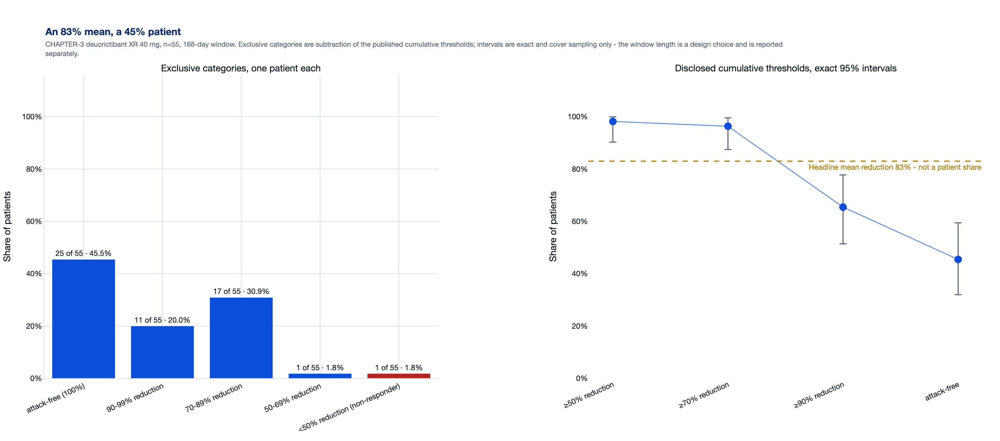
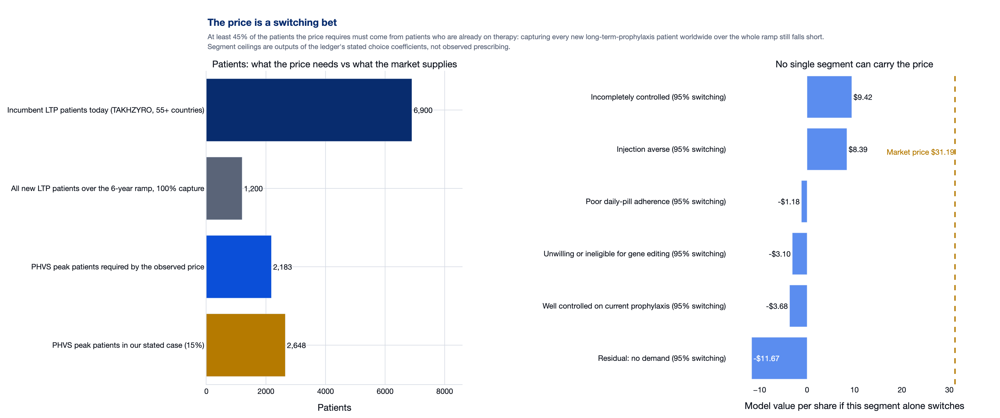
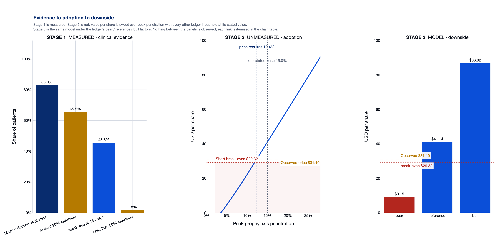

We are short Pharvaris on adoption, not on efficacy. The clinical readout is real and is already in the price; what the price has not been shown to contain is a measured path from that readout to 12.4% peak penetration in a market where oral therapy is a minority of prophylaxis value and the pool grows by a few hundred patients a year. We do not assert a fair value - we assert that the gap between our bear and bull cases is filled entirely by unverified adoption inputs, and we state the level at which the position is wrong: model value above $29.32.
We are short Pharvaris on adoption, not on efficacy. The clinical readout is real and is already in the price; what the price has not been shown to contain is a measured path from that readout to 12.4% peak penetration in a market where oral therapy is a minority of prophylaxis value and the pool grows by a few hundred patients a year. We do not assert a fair value - we assert that the gap between our bear and bull cases is filled entirely by unverified adoption inputs, and we state the level at which the position is wrong: model value above $29.32.
Each finding is a completed calculation on published data. Nothing in this list is a forecast, and no input was moved in order to reach the conclusion.
Each question is resolved in the same four steps - methodology, finding, investment implication, valuation impact - and carries a status of completed, proposed or assumed. Where the data cannot answer, the block returns a break-even threshold.
Nested cumulative responder thresholds for the CHAPTER-3 active arm (≥50% / ≥70% / ≥90% / attack-free) are inverted into mutually exclusive categories by subtraction. Sampling uncertainty is reported as exact Clopper-Pearson intervals on the disclosed cumulative counts. Observation window, sample size and verification status are carried separately and never folded into the interval. Separate trials are never compared.
The headline is a ratio of means; the ledger also holds the patient counts. In the CHAPTER-3 active arm (n=55) the mean fell 83% against placebo, while 65.5% of patients reached at least a 90% reduction and only 45.5% were attack-free over 168 days (exact 95% interval 32.0%–59.4%). 32.7% of treated patients landed between a 50% and 90% reduction. 3 of the 4 threshold rows are still flagged provisional, and one patient moves any share by 1.8%.
The efficacy headline that carries the commercial case is a mean, and a mean can be driven by patients with high baseline attack rates. The patient-level number the label and the payer will see is roughly half the headline, is measured on n=55, and is still provisional. Adoption models built on the headline are therefore resting on the statistic that is least able to describe a typical patient.
None of these quantities is an input to the discounted cash flow. The valuation's three largest drivers are net price, peak penetration and approval probability, each moving value per share by the same amount per 10%; measured efficacy does not appear among them. Efficacy reaches the model only through two unmeasured analyst inputs - the 0.25-unit choice-model efficacy bonus and the 0.75 real-world haircut. So the clinical result constrains the story, not the number.
| statistic | value | kind | basis | status | what_it_does_not_say |
|---|---|---|---|---|---|
| Mean monthly attack-rate reduction vs placebo | 83.0% | ratio of mean rates | reported | verified_primary | says nothing about how many patients are fully controlled |
| At least 90% reduction in attack rate | 65.5% | patient proportion | calculated from counts | provisional_unverified | threshold counts are provisional pending publication |
| Attack-free over 168 days | 45.5% | patient proportion | reported count 25/55 | corroborated_secondary | a 24-week count is not an annual or lifetime probability |
| Less than 50% reduction (non-responder) | 1.8% | patient proportion | calculated from counts | provisional_unverified | one patient moves this by 1.8% |
| threshold | value | status |
|---|---|---|
| Shortest attainable | 65.5% | provisional_unverified |
| Headline mean (not a patient share) | 83.0% | verified_primary |
| Attack-free at 168 days | 45.5% | corroborated_secondary |
The patients the price requires are solved from the observed price, the verified share count and net cash, the assumed net price and the eligible pool. Market inflow uses management's own published range and is deliberately set at 100% global capture - a lower bound on how much must come from switching. Segment ceilings come from the ledger's multinomial-logit choice model, whose coefficients are analyst assumptions, not measured preferences. No cross-trial efficacy comparison is used anywhere in this block.
Adoption has to come from switching, because the market does not add patients fast enough. Management puts new long-term-prophylaxis patients at 200 a year, so even if PHVS captured every new patient worldwide for the whole 6-year ramp that is 1,200 patients - against 2,183 needed for the observed price and 2,648 in our stated case. At least 45% of the patients the price requires must be taken off existing therapy, and no switching rate has ever been measured. The incumbent mix is 70% injectable, so most of that switch is off injectables - and CHAPTER-3 is placebo-controlled, not head-to-head. No single segment carries the price: the best reaches $9.42 at a 95% switching rate against $31.19.
The competitive constraint is structural rather than clinical. Oral therapy is a minority of prophylaxis value, the pool grows slowly, and the price can only be reached by taking share from incumbents whose patients have never been measured moving. The prevention and rescue products cannibalise each other inside the same cohort, so the sum of their individual best cases is not an addressable market.
Peak penetration is the joint second-largest driver of value per share ($5.68 per 10% move). The prevention / rescue relationship works against adding the two streams together: the acute stream is worth 12% of peak prophylaxis revenue and falls as prevention improves, so the two products cannot both be underwritten at their individual best case. Persistence is the cheapest lever nobody has measured - moving discontinuation from the modelled 15% to the incumbent's claimed 40% cuts the implied patient count by 29.4%.
| constraint | reading | type | status | source |
|---|---|---|---|---|
| Global new long-term-prophylaxis patients per year | 200 per year (management range 150-250) | source fact | verified_secondary | S20 |
| Market inflow over the 6-year ramp at 100% capture | 1,200 patients - a hard lower bound, not a forecast | calculated | from a verified source fact | S20 |
| Peak patients the observed price requires | 2,183 patients (12.4% of the eligible pool) | calculated | model solve | - |
| Share of those patients that must be switchers | at least 45% - switching is unmeasured | calculated | unverified | - |
| Oral share of long-term prophylaxis value today | 30% (Orladeyo vs TAKHZYRO revenue) | calculated | unverified | S10, S17 |
| Incumbent oral dropout (company claim) | ~40% against modelled persistence of 85% | source fact vs assumption | verified_secondary / unverified | S20 |
| Best single segment, switching at 95% | Incompletely controlled reaches $9.42 against $31.19 | model solve | assumed coefficients | - |
| Annual switching rate that reproduces the price | 14.1% against a stated 18% | model solve | assumed coefficients | - |
| threshold | value | unit |
|---|---|---|
| Switchers the price requires | 45.0% | share of required patients |
| Switchers the stated 15% case requires | 54.7% | share of required patients |
| Annual switching rate that reproduces the price | 14.1% | per year |
| Best single segment at 95% switching | 30.2% | of the market price |
The inverse problem is solved input by input: each adoption and valuation input is moved until the model equals the observed close of $31.19, all other ledger inputs held at their stated values. The required enterprise value is reported as a multiple of both the extended model and the reproduced cash-flow model. Sensitivities shock one input at a time. No input was moved in order to reach a conclusion.
Run one input at a time, the observed price of $31.19 is reproduced by 12.4% peak prophylaxis penetration, a 72.6% approval probability, a 12.9% discount rate or a $350,350 net price - each holding everything else at its stated value, so they cannot all be true at once. The required net price is 1.61x the only realised revenue-per-patient anchor in the ledger. Two defensible models disagree by 5.69x in enterprise value - our extended model at 2,525m and the circulated cash-flow model at 443m - and the price sits at 0.72x the first and 4.12x the second. Nothing measured separates them: the three largest drivers of value per share are price prophylaxis, peak penetration prophylaxis, approval prophylaxis, all flagged unverified.
Our case is not a competing point estimate. It is the observation that the entire gap between a $9 bear case and a $87 bull case is filled by adoption inputs that nobody has measured, while the clinical inputs that have been measured do not reach the valuation at all. We therefore state the thresholds instead of a fair value: the short is a position on adoption landing below what the price already assumes, with a defined invalidation level rather than a target.
Break-even, not a target: after a 6% annual borrow cost the short returns money only when model value sits at or below $29.32, which on our stated inputs is 11.9% peak penetration - 0.5% of headroom below the level the price itself requires. At the reference inputs the short loses 37.9%; in the bear case it makes 64.7% net.
| input | stated | required_for_price | unit | verified |
|---|---|---|---|---|
| Peak prophylaxis penetration | 15.0% | 12.4% | share of eligible pool | no - analyst assumption |
| Prophylaxis approval probability | 88.0% | 72.6% | probability | no - analyst assumption |
| Discount rate | 10.0% | 12.9% | per year | no - analyst assumption |
| Annual net price | $425,000 | $350,350 | USD per patient-year | no - Pharvaris has not set a price |
| Realised revenue per incumbent LTP patient | $217,804 | $350,350 | USD per patient-year | calculated from disclosed revenue and patient count |
| threshold | value | unit | status |
|---|---|---|---|
| Peak penetration that reproduces the price | 12.4% | of eligible pool | model solve |
| Peak penetration at which the short breaks even after 6% carry | 11.9% | of eligible pool | model solve |
| Net price that reproduces the price | $350,350 | USD per patient-year | model solve |
| Net price / incumbent realised revenue per patient | 1.61× | multiple | calculated |
| workstream | status | evidence | used_for |
|---|---|---|---|
| Registry verification of stored counts against ClinicalTrials.gov | completed | primary registry results API | RQ1 - every stored count is re-checked, failures degrade to not_found_in_registry |
| Nested-threshold inversion into exclusive response categories | completed | arithmetic on published counts | RQ1 - headline vs patient-level statistics |
| Exact binomial intervals on disclosed thresholds | completed | Clopper-Pearson on published counts | RQ1 - sampling uncertainty stated separately from window length |
| Trial comparability audit (population, window, endpoint, comparator) | completed | structural flags, no pooling | RQ1 / RQ2 - blocks accidental cross-trial comparison |
| Population accounting with mutually exclusive cohorts | completed | validated to sum to 1.0 | RQ2 - prevention and rescue never share a patient |
| Prevention / rescue bridge with one-time dispersion calibration | completed | gamma-Poisson fit to published values | RQ2 - rescue revenue falls as prevention improves |
| Inverse solve of the price against each adoption input | completed | root-finding on the extended model | RQ3 - break-even thresholds, not fair value |
| Reproduction of the circulated cash-flow model | completed | imported rows recomputed exactly | RQ3 - the multiple the price requires |
| Discrete-choice survey of prescriber preference | proposed | design only - no responses exist | RQ2 - would replace the assumed choice coefficients |
| Claims-based switching cohorts | proposed | not started | RQ2 - the single largest unmeasured input |
| Head-to-head evidence against injected prophylaxis | proposed | CHAPTER-3 is placebo-controlled only | RQ1 / RQ2 - would test the switching premise directly |
| Durability beyond 24 weeks | proposed | 168-day window only | RQ1 - would retire the window-length discount |
| Choice-model coefficients, segment shares, net price, switching rate | assumed | analyst inputs flagged unverified | RQ2 / RQ3 - carried as assumptions, never as findings |
Each exhibit ships as a PNG in docs/exhibits/ for the deck. Render with build_site.py or the app's export button.
The headline is a ratio of means. Only 45.5% of treated patients were attack-free over 168 days.

Finding. The headline is a ratio of means; the ledger also holds the patient counts. In the CHAPTER-3 active arm (n=55) the mean fell 83% against placebo, while 65.5% of patients reached at least a 90% reduction and only 45.5% were attack-free over 168 days (exact 95% interval 32.0%–59.4%). 32.7% of treated patients landed between a 50% and 90% reduction. 3 of the 4 threshold rows are still flagged provisional, and one patient moves any share by 1.8%.
Nested cumulative responder thresholds for the CHAPTER-3 active arm inverted into mutually exclusive categories by subtraction; exact Clopper-Pearson intervals on the disclosed cumulative counts; window and verification status reported separately. Separate trials are not compared.
The efficacy headline that carries the commercial case is a mean, and a mean can be driven by patients with high baseline attack rates. The patient-level number the label and the payer will see is roughly half the headline, is measured on n=55, and is still provisional. Adoption models built on the headline are therefore resting on the statistic that is least able to describe a typical patient.
At least 45% of the patients the price requires must be taken off existing therapy.

Finding. Adoption has to come from switching, because the market does not add patients fast enough. Management puts new long-term-prophylaxis patients at 200 a year, so even if PHVS captured every new patient worldwide for the whole 6-year ramp that is 1,200 patients - against 2,183 needed for the observed price and 2,648 in our stated case. At least 45% of the patients the price requires must be taken off existing therapy, and no switching rate has ever been measured. The incumbent mix is 70% injectable, so most of that switch is off injectables - and CHAPTER-3 is placebo-controlled, not head-to-head. No single segment carries the price: the best reaches $9.42 at a 95% switching rate against $31.19.
Patients required at the observed price are solved from price x verified shares less net cash, divided by assumed net price and the eligible pool. Market inflow uses management's published 150-250 new patients a year, deliberately held at 100% global capture over the 6-year ramp so it is a lower bound. Segment ceilings come from the ledger's multinomial-logit choice model, whose coefficients are analyst assumptions, not measured preferences.
The competitive constraint is structural rather than clinical. Oral therapy is a minority of prophylaxis value, the pool grows slowly, and the price can only be reached by taking share from incumbents whose patients have never been measured moving. The prevention and rescue products cannibalise each other inside the same cohort, so the sum of their individual best cases is not an addressable market.
The measured clinical inputs never reach the valuation. 12.4% peak penetration, $350,350 net price or 12.9% discount reproduces the price - one at a time.

Finding. Run one input at a time, the observed price of $31.19 is reproduced by 12.4% peak prophylaxis penetration, a 72.6% approval probability, a 12.9% discount rate or a $350,350 net price - each holding everything else at its stated value, so they cannot all be true at once. The required net price is 1.61x the only realised revenue-per-patient anchor in the ledger. Two defensible models disagree by 5.69x in enterprise value - our extended model at 2,525m and the circulated cash-flow model at 443m - and the price sits at 0.72x the first and 4.12x the second. Nothing measured separates them: the three largest drivers of value per share are price prophylaxis, peak penetration prophylaxis, approval prophylaxis, all flagged unverified.
Panel 1: published clinical anchors for the CHAPTER-3 active arm. Panel 2: value per share over peak prophylaxis penetration with every other ledger input held at its stated value, with contours at the observed close and at the carry-adjusted break-even. Panel 3: bear / reference / bull outputs of the same model. Nothing between the panels is measured; each link is listed in the chain table below with its type and verification status.
Our case is not a competing point estimate. It is the observation that the entire gap between a $9 bear case and a $87 bull case is filled by adoption inputs that nobody has measured, while the clinical inputs that have been measured do not reach the valuation at all. We therefore state the thresholds instead of a fair value: the short is a position on adoption landing below what the price already assumes, with a defined invalidation level rather than a target.
Exclusive categories are subtraction of the published cumulative thresholds; they are only point identified when all four thresholds are disclosed.
Stated inputs land at 14.4% peak penetration and $38.78 per share. Break-even switching is 14.1% a year.
Share count, terminal omission and embedded-price findings are listed, not silently corrected.
Peak penetration 12.4% against 15.0% stated; approval 72.6% against 88.0%; discount 12.9% against 10.0%.
The pitch claim audit: 15 claims traced to the sources behind them. Findings are listed, never silently corrected.
| claim_id | claim_source | claim_text | claim_value | verified_value | verification_status | source_id | source_url | impact_on_thesis |
|---|---|---|---|---|---|---|---|---|
| PC01 | Original pitch clinical extract | HELP-03 lanadelumab 300mg q2w arm size | 275 patients | 27 patients in the 300 mg every-2-weeks arm (trial total 125 randomised) | contradicted_by_primary_source | S04 | https://clinicaltrials.gov/study/NCT02586805 | Inflates the apparent precision of the competitor benchmark; any rate computed on 275 is wrong. |
| PC02 | Original pitch clinical extract | HELP-03 attack-free participants | 112 of 275 | Not reported as an attack-free count in the registry results record | not_found_in_primary_source | S04 | https://clinicaltrials.gov/study/NCT02586805 | An unsourced attack-free benchmark cannot anchor a cross-trial efficacy comparison. |
| PC03 | Original pitch clinical extract | COMPACT (Haegarda) registry identifier | NCT01316303 | NCT01912456 | contradicted_by_primary_source | S06 | https://clinicaltrials.gov/study/NCT01912456 | Wrong identifier; the cited record does not exist, so the row is not auditable as written. |
| PC04 | Original pitch clinical extract | CHANGE (Cinryze) registry identifier | NCT00262084 | No such record returned by the registry | not_found_in_primary_source | NaN | https://clinicaltrials.gov/ | Row cannot be verified; retained only as an unverified claim. |
| PC05 | Original pitch clinical extract | CHAPTER-1 sample size and window | 18 patients; 4-week window | 34 randomised overall (Part 1: 11 placebo / 11 / 12); 12-week double-blind treatment period | contradicted_by_primary_source | S03 | https://clinicaltrials.gov/study/NCT05047185 | The pitch used a shorter window and smaller N than the registry record; window length mechanically changes attack-free rates. |
| PC06 | Original pitch clinical extract | CHAPTER-3 active-arm responder counts (>=50% / >=70% / >=90% / attack-free) | 54 / 53 / 36 / 25 of 55 | Endpoints are protocol-specified; counts are not in the public record as of 5 Oct 2026. Attack-free 25/55 is consistent with contemporaneous 'nearly half attack-free' reporting. | unverified_provisional | S01 | https://app.edgar.tools/filing/1830487/0001193125-26-384339/phvs-ex99_1.htm | Carried through the model as PROVISIONAL; the response distribution and subtype bounds inherit this uncertainty. |
| PC07 | Original pitch valuation inputs | Share price used in the model | USD 28.50 (dated 15 Jan 2024) | USD 31.19 (close 2 Oct 2026) | stale_input | S16 | https://stockanalysis.com/stocks/phvs/ | Break-even arithmetic must be run against the live price, not the stale deck value. |
| PC08 | Original pitch valuation inputs | Shares outstanding | 38,000,000 | 70,200,000 | contradicted_by_primary_source | S16 | https://stockanalysis.com/stocks/phvs/ | Doubling the share count roughly halves value per share; the pitch overstates per-share value. |
| PC09 | Original pitch valuation inputs | Cash and equivalents | USD 250,000,000 | USD 363,630,000 (EUR 318.28m at 30 Jun 2026) | stale_input | S08 | https://www.sec.gov/Archives/edgar/data/1830487/000119312526345702/phvs-ex99_1.htm | Understates the net-cash cushion; modestly raises intrinsic value. |
| PC10 | Original pitch commercial assumptions | US addressable HAE patients | 18,000 | 7,614 diagnosed prevalent (2021); claims range 6,595-9,559 | contradicted_by_primary_source | S14 | https://www.delveinsight.com/report-store/hereditary-angioedema-hae-market | Overstating the US pool by ~2.4x mechanically inflates any penetration-based revenue model. |
| PC11 | Original pitch commercial assumptions | Global addressable HAE patients | 60,000 | ~19,614 modelled (US 7,614 + EU5/UK 4,500 + RoW 7,500); 7MM+China 14,375 (2021) | contradicted_by_primary_source | S14 | https://www.delveinsight.com/report-store/hereditary-angioedema-hae-market | Global TAM overstated ~3x; every derived share-of-market figure falls proportionally. |
| PC12 | Original pitch commercial assumptions | Prophylaxis approval probability | 0.70 | 0.88 used as the post-pivotal base case (editable) | outdated_input | S01 | https://app.edgar.tools/filing/1830487/0001193125-26-384339/phvs-ex99_1.htm | A pre-pivotal success rate applied after a positive Phase 3 understates value and double-counts risk that has already resolved. |
| PC13 | Original pitch commercial assumptions | US prophylaxis launch year | 2027 | 1H 2027 on-demand; prophylaxis NDA 1H 2027 with a guided 1H 2028 launch | contradicted_by_primary_source | S20 | https://stockanalysis.com/stocks/phvs/transcripts/733290-wells-fargo-21st-annual-healthcare-conference/ | Pulling prophylaxis revenue forward a year inflates present value. |
| PC14 | Original pitch commercial assumptions | US on-demand launch year | 2026 | 2027 (FDA accepted the NDA in July 2026; PDUFA 23 Apr 2027) | contradicted_by_primary_source | S22 | https://trial.medpath.com/news/pharvaris-s-oral-deucrictibant-xr-cuts-hae-attack-rate-83-in-phase-iii-chapter-3 | On-demand revenue cannot begin before approval. |
| PC15 | Original pitch valuation inputs | Stated value per share implied by the pitch cash-flow table | Not stated explicitly in the CSV; internal cumulative column omits the terminal value | Reproduced: USD 13.0 if the pitch's own cumulative column is used, USD 18.25 if the terminal value is added, on 38m shares | reconciliation_gap | S15 | https://ir.pharvaris.com/node/7946/html | The pitch model as imported does not by itself support the market price; the gap is the object of the break-even analysis. |
| check | stored | recomputed_with_terminal | message | current |
|---|---|---|---|---|
| cumulative column excludes terminal value | 243346375.0 | 443443975.0 | The pitch's cumulative_pv_usd column stops at the explicit forecast and omits the terminal row, so the headline present value understates the model by 200,000,000 USD of PV. | NaN |
| share count | 38000000.0 | NaN | The model is built on 38.0m shares; verified outstanding shares are 70.2m (1.85x higher), so any per-share figure in the pitch is stale. | 70200000.00 |
| share price input | 28.5 | NaN | The embedded price is the pitch's own reference, not today's close. | 31.19 |
| implied discount rate | 0.1 | NaN | The first-year row implies a discount rate of 10.0%, consistent with a 10% model. | NaN |
Required equity value $2,189,538,000 against a modelled $2,887,745,663; gap $-698,207,663.
| scenario | pv_operating | pv_terminal | terminal_value | terminal_growth_applied | enterprise_value | net_cash | equity_value | value_per_share | value_per_diluted_share | stock_price | upside_downside | upside_downside_pct | implied_market_cap | required_ev_for_price | terminal_share_of_ev | vs_price_pct | peak_proph_patients | peak_proph_revenue | discount_rate | approval_prophylaxis |
|---|---|---|---|---|---|---|---|---|---|---|---|---|---|---|---|---|---|---|---|---|
| bear | 2.793737e+08 | 0.000000e+00 | 0.000000e+00 | 0.0 | 2.793737e+08 | 362860289.0 | 6.422340e+08 | 9.148632 | 7.168193 | 31.19 | -22.041368 | -0.706681 | 2189538000.0 | 1826677711.0 | 0.000000 | -0.706681 | 1853.565 | 708988612.5 | 0.115 | 0.7480 |
| reference | 2.422599e+09 | 1.022865e+08 | 9.606089e+08 | 0.0 | 2.524885e+09 | 362860289.0 | 2.887746e+09 | 41.135978 | 32.231115 | 31.19 | 9.945978 | 0.318884 | 2189538000.0 | 1826677711.0 | 0.040511 | 0.318884 | 2647.950 | 1125378750.0 | 0.100 | 0.8800 |
| bull | 5.184734e+09 | 5.469589e+08 | 4.144550e+09 | 0.0 | 5.731693e+09 | 362860289.0 | 6.094553e+09 | 86.816995 | 68.023387 | 31.19 | 55.626995 | 1.783488 | 2189538000.0 | 1826677711.0 | 0.095427 | 1.783488 | 3442.335 | 1580031765.0 | 0.090 | 0.9328 |
| scenario | stock_price | value_per_share | gross_return_pct | annual_borrow_cost_pct | carry_pct | net_return_pct | breakeven_borrow_cost_pct | breakeven_value_per_share | max_loss_pct_if_price_doubles | reward_to_risk | short_works_at_these_inputs | short_interest_shares | horizon_years | note |
|---|---|---|---|---|---|---|---|---|---|---|---|---|---|---|
| bear | 31.19 | 9.148632 | 70.668059 | 6.0 | 6.0 | 64.668059 | 70.668059 | 29.3186 | 100.0 | 0.646681 | True | 1780000 | 1.0 | Gross return is the gap between the observed price and the model value at the stated inputs; it is a scenario result, not a recommendation. |
| reference | 31.19 | 41.135978 | -31.888356 | 6.0 | 6.0 | -37.888356 | -31.888356 | 29.3186 | 100.0 | 0.000000 | False | 1780000 | 1.0 | Gross return is the gap between the observed price and the model value at the stated inputs; it is a scenario result, not a recommendation. |
| bull | 31.19 | 86.816995 | -178.348814 | 6.0 | 6.0 | -184.348814 | -178.348814 | 29.3186 | 100.0 | 0.000000 | False | 1780000 | 1.0 | Gross return is the gap between the observed price and the model value at the stated inputs; it is a scenario result, not a recommendation. |
| point | detail | why_it_bites |
|---|---|---|
| Our own stated-input model says the stock is cheap | At the ledger's stated inputs the model is worth $41.14 against a $31.19 close, i.e. +31.9%. At those inputs the short loses 37.9% net of carry. | The bear case is conditional; it is not what the ledger states. |
| Every single input has slack | The price requires only 12.4% peak penetration against 15% stated, 72.6% approval against 88% and a 12.9% discount rate against 10%. On a one-at-a-time basis the market is assuming less than we state. | The stated case does not have to be revised down for the price to be explainable. |
| The clinical result is strong and verified | 83% mean rate reduction vs placebo, p<0.0001, with the primary endpoint verified against the company disclosure and a PDUFA date already set for the on-demand indication. | A short built on 'the drug does not work' would be wrong. Ours is not. |
| Carry is real and the position must resolve on schedule | Borrow is assumed at 6% a year, so the position must resolve within the horizon rather than merely be right eventually. | Correctness without timing still loses money. |
| Sell-side consensus is far above the price | The 14-analyst mean target is $57.58 against a $31.19 close, on a 'Strong Buy' consensus. | We are on the other side of a crowded, well-covered book. |
| Approval risk is dated and public | The on-demand NDA is under review with a stated PDUFA date; a positive decision moves the approval input directly and the market knows the date. | A binary catalyst can close the gap faster than adoption data can. |
| Three of four response thresholds are provisional | The counts behind the exclusive categories are company-reported and not yet posted to the registry; only the attack-free count is corroborated. | Part of our own RQ1 evidence could be revised on publication. |
| The survey has not been conducted | Physician preference is unmeasured in both directions: we cannot show the choice coefficients are too high, only that nobody has estimated them. | RQ2's constraints are bounds, not measurements. |
A verified row only means *the number in the table matches the source*. It says nothing about whether the source is the right comparator, whether the window is comparable, or whether a placebo-controlled result transfers to a market with existing options.
unverified. The map translates assumptions into patients, it does not observe them.| category | condition | why_it_matters | measured_by | currently |
|---|---|---|---|---|
| Clinical | Head-to-head or adequately controlled evidence that oral deucrictibant is superior to injected prophylaxis on attack-free rate at 24+ weeks | Justifies a higher peak penetration or price premium. | Randomised trial with a stated window; cross-trial read-across does not count. | Not measured. CHAPTER-3 vs placebo only. |
| Clinical | Durability of the attack-free rate beyond 24 weeks (48+ week extension) | Attack-free rates fall with window length; a long window result would retire the window-length discount. | Extension study with an explicit measurement window. | Not measured. 168-day window only. |
| Prescribing | Switching rate above the stated base case in real-world data | Peak penetration is the largest driver of value per share. | Pharmacy-claims based switching cohorts, not stated preferences. | Not measured. No claims-based switching series in the ledger. |
| Pricing | Net price realised above the assumed level at launch | Price moves value per share nearly one-for-one. | Gross-to-net realisation after the first full year of sales. | Not measured. Pharvaris has not set a price. |
| Regulatory | Approval of both indications with no label restriction | Approval probability is applied once per product; both approvals raise value by the difference between 88% / 92% and 100%. | FDA action (PDUFA 23 Apr 2027 for the on-demand indication). | Pending. NDA under review. |
| Market | Prevalence or prophylaxis penetration above the ledger's stated values | The addressable denominator multiplies directly. | Registry-confirmed diagnosed prevalence, not claims extrapolation. | Ledger states 19,614 diagnosed globally; required equity value for $31.19 is 2,189,538,000 USD versus a modelled 2,887,745,663 USD. |
94 parameters. Every row carries its arithmetic type (reported / calculated / assumed), verification status and source.
| Parameter | Value | Unit | Category | Type | Status | Source | Basis |
|---|---|---|---|---|---|---|---|
| us diagnosed hae patients | 7,614 | patients | epidemiology | source_fact | verified_secondary | [S14](https://www.delveinsight.com/report-store/hereditary-angioedema-hae-market) | US diagnosed prevalent HAE cases in 2021 (DelveInsight). Claims-based alternative range is 6595-9559 for 2018-2020 (S13). |
| us hae prevalence per 100k | 2.43 | per 100000 | epidemiology | source_fact | verified_primary | [S13](https://pubmed.ncbi.nlm.nih.gov/40414286/) | US claims-based prevalence 2020 cohort; expert-adjusted estimate 1.84 per 100,000 (6595 people). |
| us hae prevalence expert adj per 100k | 1.84 | per 100000 | epidemiology | source_fact | verified_primary | [S13](https://pubmed.ncbi.nlm.nih.gov/40414286/) | Expert-physician adjusted prevalence estimate 2020 cohort. |
| eu5 uk diagnosed hae patients | 4,500 | patients | epidemiology | calculated | unverified | [S14](https://www.delveinsight.com/report-store/hereditary-angioedema-hae-market) | DERIVED: 7MM+China = 14375 and US = 7614 (both 2021), leaving 6761 for EU5+UK+Japan+China; EU5+UK share assumed at 4500. Editable. |
| row diagnosed hae patients | 7,500 | patients | epidemiology | analyst_assumption | unverified | — | Rest-of-world diagnosed patients. Analyst assumption - no single registry source. Editable. |
| global diagnosed hae patients | 19,614 | patients | epidemiology | calculated | unverified | — | SUM of US + EU5/UK + RoW. Used as the denominator for global penetration. |
| takhyro fy2025 revenue jpy | 2.23924e+11 | JPY | market_anchor | source_fact | verified_primary | [S11](https://www.sec.gov/Archives/edgar/data/1395064/000139506426000177/R43.htm) | TAKHZYRO revenue for fiscal year ended 31 Mar 2026 (Takeda revenue disaggregation). FY2024 = JPY 223.163bn. |
| usdjpy assumed | 149 | JPY per USD | market_anchor | analyst_assumption | unverified | — | Assumed FX for USD conversion. Editable. |
| takhyro fy2025 revenue usd | 1.50285e+09 | USD | market_anchor | calculated | unverified | — | CALCULATED = takhyro_fy2025_revenue_jpy / usdjpy_assumed. |
| takhyro patients global | 6,900 | patients | market_anchor | source_fact | verified_primary | [S10](https://assets-dam.takeda.com/image/upload/v1780626053/Global/Investor/Financial-Results/FY2025/Q4_0605/qr2025_q4_p01_en_20260605.pdf) | ~6900 patients treated globally; >20000 patient-years of experience; #1 prescribed modern long-term prophylaxis. |
| implied revenue per takhyro patient | 217,804 | USD | market_anchor | calculated | unverified | — | CALCULATED = takhyro_fy2025_revenue_usd / takhyro_patients_global. Global blended realization including ex-US pricing - a sanity anchor, not a US net price. |
| orladeyo fy2026 guidance usd | 6.45e+08 | USD | market_anchor | source_fact | verified_secondary | [S17](https://stockanalysis.com/stocks/bcrx/) | BioCryst FY2026 Orladeyo revenue guidance (up to USD 645m). Q2 2026 Orladeyo net revenue USD 158.2m. |
| implied oral share of ltp value | 0.3 | proportion | market_anchor | calculated | unverified | — | CALCULATED = orladeyo_fy2026_guidance_usd / (orladeyo_fy2026_guidance_usd + takhyro_fy2025_revenue_usd). Oral share of the two leading LTP brands by revenue. |
| global hae therapy market 2027e | 4.3e+09 | USD | market_anchor | source_fact | verified_secondary | [S15](https://ir.pharvaris.com/node/7946/html) | Company filing cites public research: ~USD 2.7bn (2022) growing at ~9% CAGR to ~USD 4.3bn (2027). |
| prophylaxis penetration of diagnosed | 0.6 | proportion | pathway | analyst_assumption | unverified | — | Share of diagnosed patients on long-term prophylaxis. Analyst assumption with editable range 0.40-0.80; no registry-verified figure. |
| oral share of prophylaxis | 0.3 | proportion | pathway | calculated | unverified | — | Seeded from implied_oral_share_of_ltp_value. Editable in the UI. |
| new ltp patients per year global | 200 | patients per year | pathway | source_fact | verified_secondary | [S20](https://stockanalysis.com/stocks/phvs/transcripts/733290-wells-fargo-21st-annual-healthcare-conference/) | Management range 150-250 new long-term-prophylaxis patients per year (conference remarks, Sept 2026). |
| orladeyo annual dropout rate | 0.4 | proportion | pathway | source_fact | verified_secondary | [S20](https://stockanalysis.com/stocks/phvs/transcripts/733290-wells-fargo-21st-annual-healthcare-conference/) | COMPANY CLAIM: 'about 40% of patients on Orladeyo drop out, either for efficacy or tolerability'. Unverified by third-party data. |
| seg well controlled | 0.32 | proportion | segments | analyst_assumption | unverified | — | Segment 1: well controlled on current prophylaxis (no breakthrough attacks). Shares are editable and validated to sum to <=1. |
| seg incompletely controlled | 0.18 | proportion | segments | analyst_assumption | unverified | — | Segment 2: incompletely controlled on current prophylaxis (>=1 breakthrough attack per month). |
| seg injection averse | 0.16 | proportion | segments | analyst_assumption | unverified | — | Segment 3: injection-averse and not on injectable prophylaxis. |
| seg poor daily pill adherence | 0.12 | proportion | segments | analyst_assumption | unverified | — | Segment 4: poor daily-pill adherence on current oral prophylaxis. |
| seg gene editing unwilling | 0.1 | proportion | segments | analyst_assumption | unverified | — | Segment 5: unwilling or ineligible to consider gene editing (keeps them in the drug market rather than a one-shot cure). |
| seg residual no demand | 0.12 | proportion | segments | analyst_assumption | unverified | — | Residual segment so the five headline segments plus residual sum to exactly 1.0. |
| prophylaxis eligibility rate | 0.9 | proportion | access | analyst_assumption | unverified | — | Clinical eligibility for prophylaxis among diagnosed patients. |
| payer coverage rate | 0.85 | proportion | access | analyst_assumption | unverified | — | Share of eligible patients whose payer approves a premium oral prophylactic. |
| out of pocket monthly usd | 50 | USD per month | access | analyst_assumption | unverified | — | Typical specialty-pharmacy copay tier for insured patients. |
| base switching rate | 0.18 | proportion | switching | analyst_assumption | unverified | — | Baseline annual probability that an eligible patient on existing prophylaxis switches to PHVS. SCENARIO INPUT - not a measured prescribing rate. |
| chapter3 rate reduction vs placebo | 0.83 | proportion | efficacy | source_fact | verified_primary | [S01](https://app.edgar.tools/filing/1830487/0001193125-26-384339/phvs-ex99_1.htm) | CHAPTER-3 primary endpoint: 83% mean monthly attack-rate reduction vs placebo (p<0.0001; 95% CI 72-90 per S22). |
| chapter3 rate reduction type12 | 0.87 | proportion | efficacy | source_fact | verified_primary | [S01](https://app.edgar.tools/filing/1830487/0001193125-26-384339/phvs-ex99_1.htm) | 87% reduction in the HAE type 1/2 subgroup (n=80). |
| real world efficacy haircut | 0.75 | multiplier | efficiency | analyst_assumption | unverified | — | Multiplier applied to trial efficacy to reflect real-world adherence and diagnosis quality. Scenario input. |
| baseline monthly attack rate | 1.93 | attacks per 4 weeks | efficiency | source_fact | verified_primary | [S03](https://clinicaltrials.gov/study/NCT05047185) | CHAPTER-1 placebo-arm least-squares mean (SE 0.391). HELP-03 placebo arm was 1.967 and APeX-2 placebo 2.35 per 4 weeks. |
| phvs prophylaxis annual net price us | 425,000 | USD per patient-year | pricing | analyst_assumption | unverified | — | Pharvaris has stated it has not yet set price. Assumed at parity with leading LTP peers; editable. |
| phvs acute annual net price us | 85,000 | USD per acute-treated patient-year | pricing | analyst_assumption | unverified | — | Annual on-demand spend per acute-treated patient (course prices x courses per year). Analyst assumption. |
| phvs acute launch year | 2,027 | year | launch | source_fact | verified_secondary | [S22](https://trial.medpath.com/news/pharvaris-s-oral-deucrictibant-xr-cuts-hae-attack-rate-83-in-phase-iii-chapter-3) | FDA accepted the deucrictibant IR NDA in July 2026; PDUFA date 23 Apr 2027. Company has guided to a first-half 2027 launch. |
| phvs prophylaxis launch year | 2,028 | year | launch | source_fact | verified_secondary | [S20](https://stockanalysis.com/stocks/phvs/transcripts/733290-wells-fargo-21st-annual-healthcare-conference/) | Prophylaxis NDA planned for 1H 2027; management has guided to a first-half 2028 prophylaxis launch. |
| peak penetration prophylaxis | 0.15 | proportion | uptake | analyst_assumption | unverified | — | Peak share of prophylaxis-eligible patients at steady state. SCENARIO INPUT. |
| peak penetration acute | 0.08 | proportion | uptake | analyst_assumption | unverified | — | Peak share of acute-eligible patients at steady state. SCENARIO INPUT. |
| prophylaxis time to peak years | 6 | years | uptake | analyst_assumption | unverified | — | Years from launch to peak penetration. |
| acute time to peak years | 4 | years | uptake | analyst_assumption | unverified | — | Years from launch to peak penetration. |
| prophylaxis annual discontinuation | 0.15 | proportion | persistence | analyst_assumption | unverified | — | Annual discontinuation on PHVS prophylaxis. Management argues this will be low; the Orladeyo 40% claim implies otherwise for orals. |
| acute annual discontinuation | 0.25 | proportion | persistence | analyst_assumption | unverified | — | Annual discontinuation on PHVS on-demand therapy. |
| cogs prophylaxis pct revenue | 0.12 | proportion | margin | analyst_assumption | unverified | — | COGS as a percentage of net revenue (specialty oral small molecule). |
| cogs acute pct revenue | 0.15 | proportion | margin | analyst_assumption | unverified | — | COGS as a percentage of net revenue for the acute capsule. |
| gross to net prophylaxis | 0.72 | proportion | pricing | analyst_assumption | unverified | — | Gross-to-net for specialty hematology prophylaxis. |
| rd expense 2026 usd | 1.4e+08 | USD | opex | calculated | verified_primary | [S08](https://www.sec.gov/Archives/edgar/data/1830487/000119312526345702/phvs-ex99_1.htm) | CALCULATED: Q2 2026 R&D EUR 35.0m x 4. H1 2026 R&D was EUR 65.2m. |
| sganda expense 2026 usd | 6.32e+07 | USD | opex | calculated | verified_primary | [S08](https://www.sec.gov/Archives/edgar/data/1830487/000119312526345702/phvs-ex99_1.htm) | CALCULATED: Q2 2026 G&A EUR 15.8m x 4 (commercial build-out underway). |
| sganda peak usd | 1.5e+08 | USD | opex | analyst_assumption | unverified | — | SG&A at commercial scale (US + EU launch infrastructure). Editable. |
| rd post approval usd | 7e+07 | USD | opex | analyst_assumption | unverified | — | R&D after pivotal programmes complete (lifecycle, CREAATE, post-marketing). Editable. |
| q2 2026 net loss eur | 4.78427e+07 | EUR | opex | source_fact | verified_primary | [S08](https://www.sec.gov/Archives/edgar/data/1830487/000119312526345702/phvs-ex99_1.htm) | Net loss for the quarter ended 30 Jun 2026 (EUR 0.70 per share). |
| cash and investments usd | 3.6363e+08 | USD | capital | source_fact | verified_secondary | [S16](https://stockanalysis.com/stocks/phvs/) | USD 363.63m cash and equivalents. Company reports EUR 318.28m at 30 Jun 2026 (S08). |
| total debt usd | 769,711 | USD | capital | source_fact | verified_secondary | [S16](https://stockanalysis.com/stocks/phvs/) | Total debt USD 0.77m; net cash USD 362.86m (USD 5.17 per share). |
| shares outstanding | 7.02e+07 | shares | capital | source_fact | verified_secondary | [S16](https://stockanalysis.com/stocks/phvs/) | Ordinary shares outstanding as of Oct 2026 (up 19.9% year over year; 65.21m at 31 Dec 2025 per S15). |
| annual dilution rate | 0.05 | proportion | capital | analyst_assumption | unverified | — | Forward annual share dilution from ongoing burn. Historical one-year share growth was 19.9% including a May 2026 raise. |
| shares diluted 5yr | 9e+07 | shares | capital | calculated | unverified | — | CALCULATED = shares_outstanding x (1 + annual_dilution_rate)^5. |
| stock price current | 31.19 | USD | valuation | source_fact | verified_secondary | [S16](https://stockanalysis.com/stocks/phvs/) | Close on 2 Oct 2026. 52-week range USD 20.65-43.25. |
| stock price pitch deck | 28.5 | USD | valuation | source_fact | unverified | — | STALE INPUT: price embedded in the original pitch model (dated 15 Jan 2024). Superseded by stock_price_current. |
| analyst mean price target | 57.58 | USD | valuation | source_fact | verified_secondary | [S16](https://stockanalysis.com/stocks/phvs/) | 14-analyst mean 12-month target; consensus 'Strong Buy'. Post-readout targets ranged USD 44-79. |
| discount rate | 0.1 | proportion | valuation | analyst_assumption | unverified | — | Discount rate for risk-adjusted DCF. Editable; sensitivity is reported. |
| terminal growth rate | 0.02 | proportion | valuation | analyst_assumption | unverified | — | Perpetual growth after explicit forecast horizon. |
| borrow cost annual | 0.06 | proportion | valuation | analyst_assumption | unverified | — | Assumed annual borrow cost for a hard-to-borrow small-cap biotech. Editable. |
| short interest shares | 1.78e+06 | shares | valuation | source_fact | verified_secondary | [S23](https://finviz.com/stock?t=PHVS) | Short interest ~1.78m shares, 5.31% of float (early Oct 2026). |
| approval probability prophylaxis | 0.88 | proportion | regulatory | analyst_assumption | unverified | — | Probability of approval for the prophylaxis indication after a positive pivotal Phase 3. Applied ONCE to future cash flows. |
| approval probability acute | 0.92 | proportion | regulatory | analyst_assumption | unverified | — | Probability of approval for the on-demand indication while the NDA is under FDA review (PDUFA 23 Apr 2027). Applied ONCE to future cash flows. |
| prophylaxis eligible patients global | 17,653 | patients | uptake | calculated | unverified | — | CALCULATED = global_diagnosed_hae_patients x prophylaxis_eligibility_rate. Denominator for peak prophylaxis penetration. |
| acute eligibility rate | 1 | proportion | uptake | analyst_assumption | unverified | — | Share of diagnosed patients who may buy on-demand therapy, including breakthrough attacks while on prophylaxis. Set to 1.0 because every diagnosed patient has attacks. Editable. |
| acute eligible patients global | 19,614 | patients | uptake | calculated | unverified | — | CALCULATED = global_diagnosed_hae_patients x acute_eligibility_rate. Denominator for peak acute penetration. |
| loe year | 2,042 | year | valuation | analyst_assumption | unverified | — | Assumed loss-of-exclusivity year for both indications; after this year revenue declines at post_loe_annual_decline. Editable. |
| post loe annual decline | 0.15 | proportion | valuation | analyst_assumption | unverified | — | Annual revenue decline after loss of exclusivity. Editable. |
| effective tax rate | 0.18 | proportion | valuation | analyst_assumption | unverified | — | Cash tax rate applied once net operating losses are exhausted. Editable. |
| capex pct revenue | 0.02 | proportion | valuation | analyst_assumption | unverified | — | Capital expenditure as a percentage of revenue. Editable. |
| nwc pct incremental revenue | 0.05 | proportion | valuation | analyst_assumption | unverified | — | Working-capital investment as a percentage of the year-on-year revenue increase. Editable. |
| forecast end year | 2,049 | year | valuation | analyst_assumption | unverified | — | Last explicit forecast year of the extended model. Editable. |
| rd growth post launch | 0.03 | proportion | valuation | analyst_assumption | unverified | — | Annual growth applied to post-launch R&D from the first launch year. Editable. |
| existing oral price index | 1 | multiple of reference price | choice_model | analyst_assumption | unverified | — | Annual cost of the existing oral prophylactic relative to reference_ltp_price_usd. Editable. |
| mnl asc current | 0 | utility | choice_model | analyst_assumption | unverified | — | Intercept for staying on current prophylaxis. Normalised to zero. |
| mnl asc existing oral | 0.3 | utility | choice_model | analyst_assumption | unverified | — | Intercept for switching to the existing oral prophylactic. Editable. |
| mnl asc phvs oral | 0.4 | utility | choice_model | analyst_assumption | unverified | — | Intercept for switching to PHVS oral prophylaxis before preferences and price. Editable. |
| mnl price coef per ref | -1.2 | utility per reference price | choice_model | analyst_assumption | unverified | — | Utility change for a full reference-price increase in annual net cost. Editable. |
| mnl switch cost | -0.4 | utility | choice_model | analyst_assumption | unverified | — | Disutility of changing therapy, applied to both switch options. Editable. |
| mnl efficacy bonus | 0.25 | utility | choice_model | analyst_assumption | unverified | — | Utility bonus for PHVS oral reflecting the CHAPTER-3 efficacy readout. Scenario input - not a measured preference. |
| oral pref well controlled | 0.1 | utility | segments | analyst_assumption | unverified | — | Oral-preference increment for patients well controlled on current prophylaxis. |
| oral pref incompletely controlled | 0.55 | utility | segments | analyst_assumption | unverified | — | Oral-preference increment for incompletely controlled patients. |
| oral pref injection averse | 1.4 | utility | segments | analyst_assumption | unverified | — | Oral-preference increment for injection-averse patients. |
| oral pref poor daily pill adherence | 0.25 | utility | segments | analyst_assumption | unverified | — | Oral-preference increment for patients with poor daily-pill adherence (already oral; convenience alone is weak). |
| oral pref gene editing unwilling | 0.6 | utility | segments | analyst_assumption | unverified | — | Oral-preference increment for patients unwilling or ineligible for gene editing. |
| oral pref residual no demand | 0.15 | utility | segments | analyst_assumption | unverified | — | Oral-preference increment for the residual segment. |
| addressable well controlled | 0.2 | proportion | segments | analyst_assumption | unverified | — | Share of the segment considered likely to change therapy over the forecast horizon. |
| addressable incompletely controlled | 0.9 | proportion | segments | analyst_assumption | unverified | — | Share of the segment considered likely to change therapy over the forecast horizon. |
| addressable injection averse | 0.85 | proportion | segments | analyst_assumption | unverified | — | Share of the segment considered likely to change therapy over the forecast horizon. |
| addressable poor daily pill adherence | 0.7 | proportion | segments | analyst_assumption | unverified | — | Share of the segment considered likely to change therapy over the forecast horizon. |
| addressable gene editing unwilling | 0.6 | proportion | segments | analyst_assumption | unverified | — | Share of the segment considered likely to change therapy over the forecast horizon. |
| addressable residual no demand | 0.1 | proportion | segments | analyst_assumption | unverified | — | Share of the segment considered likely to change therapy over the forecast horizon. |
| reference ltp price usd | 425,000 | USD per patient-year | choice_model | analyst_assumption | unverified | — | Reference annual net price for long-term prophylaxis used as the price index in the choice model. Set at parity with phvs_prophylaxis_annual_net_price_us, consistent with the pricing assumption. Editable. |
Stored counts re-checked against the primary registry record. Failures
degrade to not_found_in_registry; nothing is ever invented. ClinicalTrials.gov
holds no results record for NCT06669754, so the CHAPTER-3 threshold rows remain
company-reported and provisional.
Audit status: PASS - 3 provenance rows, 23 source-coverage rows, 15 audited pitch claims.
No failed verification checks: every stored count that could be re-checked against the registry matched.
| value_type | verification_status | observations | trials | share |
|---|---|---|---|---|
| assumed | provisional_unverified | 3 | 1 | 0.090909 |
| reported | corroborated_secondary | 3 | 3 | 0.090909 |
| reported | verified_primary | 27 | 5 | 0.818182 |
| source_id | title | publisher | source_type | url | publication_date | used |
|---|---|---|---|---|---|---|
| S01 | Pharvaris announces positive topline data from CHAPTER-3 pivotal study of deucrictibant XR (Exhibit 99.1) | Pharvaris N.V. / GlobeNewswire | primary_company_disclosure | https://app.edgar.tools/filing/1830487/0001193125-26-384339/phvs-ex99_1.htm | 2026-09-08 | True |
| S02 | Study of Oral Deucrictibant Extended-Release Tablet for Prophylaxis (CHAPTER-3) | ClinicalTrials.gov | primary_registry | https://clinicaltrials.gov/study/NCT06669754 | 2026-02-13 | False |
| S03 | Dose-ranging Study of Oral PHA-022121 for Prophylaxis (CHAPTER-1) - structured results | ClinicalTrials.gov | primary_registry_results | https://clinicaltrials.gov/study/NCT05047185 | 2026-10-05 | True |
| S04 | Efficacy and Safety Study of DX-2930 to Prevent Acute Angioedema Attacks (HELP-03) - structured results | ClinicalTrials.gov | primary_registry_results | https://clinicaltrials.gov/study/NCT02586805 | 2026-10-05 | True |
| S05 | Efficacy and Safety Study of BCX7353 for Prevention of Attacks in HAE (APeX-2) - structured results | ClinicalTrials.gov | primary_registry_results | https://clinicaltrials.gov/study/NCT03485911 | 2026-10-05 | True |
| S06 | Study of Subcutaneous C1-esterase Inhibitor for Prevention of HAE (COMPACT) - structured results | ClinicalTrials.gov | primary_registry_results | https://clinicaltrials.gov/study/NCT01912456 | 2026-10-05 | True |
| S07 | Study of Oral Deucrictibant Soft Capsule for On-Demand Treatment (RAPIDe-3) | ClinicalTrials.gov | primary_registry | https://clinicaltrials.gov/study/NCT06343779 | 2026-10-05 | False |
| S08 | Pharvaris second quarter 2026 financial results (6-K Exhibit 99.1) | Pharvaris N.V. / SEC EDGAR | primary_regulatory_filing | https://www.sec.gov/Archives/edgar/data/1830487/000119312526345702/phvs-ex99_1.htm | 2026-08-12 | False |
| S09 | Takeda FY2025 fourth quarter and full year results | Takeda Pharmaceutical Company Limited | primary_company_disclosure | https://www.takeda.com/newsroom/newsreleases/2026/takeda-reports-fourth-quarter-fy2025-results/ | 2026-05-13 | False |
| S10 | Takeda FY2025 Q4 presentation - TAKHZYRO product page | Takeda Pharmaceutical Company Limited | primary_company_disclosure | https://assets-dam.takeda.com/image/upload/v1780626053/Global/Investor/Financial-Results/FY2025/Q4_0605/qr2025_q4_p01_en_20260605.pdf | 2026-06-05 | False |
| S11 | Takeda FY2025 annual securities report - revenue disaggregation | Takeda Pharmaceutical Company Limited | primary_regulatory_filing | https://www.sec.gov/Archives/edgar/data/1395064/000139506426000177/R43.htm | 2026-06 | False |
| S12 | What new drugs are available for the management of hereditary angioedema? | University of Illinois at Chicago Drug Information Group | secondary_review | https://dig.pharmacy.uic.edu/faqs/2025-2/october-2025-faqs/what-new-drugs-are-available-for-the-management-of-hereditary-angioedema/ | 2025-10-01 | True |
| S13 | Establishing a hereditary angioedema prevalence for the United States using a large administrative claims database | Annals of Allergy Asthma & Immunology (PubMed) | peer_reviewed | https://pubmed.ncbi.nlm.nih.gov/40414286/ | 2025-06-16 | False |
| S14 | Hereditary Angioedema Market Insights Epidemiology and Market Forecast | DelveInsight | secondary_market_research | https://www.delveinsight.com/report-store/hereditary-angioedema-hae-market | 2024-01-03 | False |
| S15 | Pharvaris annual report on Form 20-F (risk factors and market context) | Pharvaris N.V. / SEC EDGAR | primary_regulatory_filing | https://ir.pharvaris.com/node/7946/html | 2026-04-02 | False |
| S16 | Pharvaris reports second quarter 2026 financial results and business update (stockanalysis.com) | StockAnalysis.com | secondary_aggregator | https://stockanalysis.com/stocks/phvs/ | 2026-10-02 | False |
| S17 | BioCryst Pharmaceuticals stock and news overview (Q2 2026 Orladeyo results) | StockAnalysis.com | secondary_aggregator | https://stockanalysis.com/stocks/bcrx/ | 2026-10-02 | False |
| S18 | Pharvaris outlines 2026 strategic priorities | Pharvaris N.V. | primary_company_disclosure | https://ir.pharvaris.com/news-releases/news-release-details/pharvaris-outlines-2026-strategic-priorities/ | 2026-01-12 | False |
| S19 | Pharvaris fourth quarter and full year 2024 results | Pharvaris N.V. / GlobeNewswire | primary_company_disclosure | https://www.globenewswire.com/de/news-release/2025/04/07/3056547/0/en/Pharvaris-Reports-Fourth-Quarter-and-Full-Year-2024-Financial-Results-and-Provides-Business-Update.html | 2025-04-07 | False |
| S20 | Pharvaris at the Wells Fargo 21st Annual Healthcare Conference (transcript) | StockAnalysis.com / Wells Fargo | secondary_transcript | https://stockanalysis.com/stocks/phvs/transcripts/733290-wells-fargo-21st-annual-healthcare-conference/ | 2026-09-10 | False |
| S21 | Pharvaris CHAPTER-3 Phase 3 trial design (investigator slide deck) | Pharvaris N.V. | primary_company_disclosure | https://ir.pharvaris.com/static-files/e7e9b074-6547-472a-924b-95e3bae44f58 | 2026-01 | False |
| S22 | Pharvaris topline coverage including 95% confidence interval for the primary endpoint | MedPath Trial | secondary_news | https://trial.medpath.com/news/pharvaris-s-oral-deucrictibant-xr-cuts-hae-attack-rate-83-in-phase-iii-chapter-3 | 2026-09-09 | False |
| S23 | PHVS stock quote and short interest | Finviz | secondary_aggregator | https://finviz.com/stock?t=PHVS | 2026-10-02 | False |
# Methodology
PHVS Clinical Expectations Lab is the research component of a short thesis on Pharvaris N.V. (NASDAQ: PHVS, close $31.19 on 2 October 2026). It reverse-engineers the assumptions required to justify that price, and it is a measurement instrument, not a forecast.
The lab leads with the recommendation, then resolves three research questions. Every question is stated the same way, so no step between "a trial read out" and "a share is worth X" can be hidden:
| step | what it must contain |
|---|---|
| methodology | exactly what was computed and from which disclosed counts |
| finding | the number, with its verification status |
| investment implication | what it means for the thesis, in words |
| valuation impact | how far it moves value per share - or none |
Each question, and each workstream under it, carries one of three statuses:
| status | meaning |
|---|---|
completed | analysis that has been run on published data |
proposed | research designed but not yet carried out |
assumed | analyst input with no source measurement |
Where the data cannot answer a question, the output is a break-even threshold or a sensitivity, never an invented conclusion.
Every observation carries drug, arm, population, sample size, endpoint, window, numerator/denominator, background therapy, exclusions, source URL, page, publication date and one of three arithmetic tags:
| tag | meaning |
|---|---|
reported | copied from the source without transformation |
calculated | derived by arithmetic from reported values (formula stated) |
assumed | an analyst input with no source measurement |
Every row also carries a verification_status:
| status | meaning |
|---|---|
verified_primary | matched against the primary registry record |
verified_secondary | matched against a primary filing or peer-reviewed source |
corroborated_secondary | matches a credible secondary source only |
provisional_unverified | company-reported, not yet posted to the registry |
unverified | analyst assumption, no source measurement exists |
phvs_lab.modules.evidence.verify_against_registry re-queries ClinicalTrials.gov live and compares the stored counts with the registry's own measurements, per arm. Failures degrade to not_found_in_registry; they never invent a value.
Responder endpoints are published as nested cumulative thresholds (>=50%, >=70%, >=90%, attack-free). Exclusive categories are recovered by subtraction:
attack-free = c4
90-99% = c3 - c4
70-89% = c2 - c3
50-69% = c1 - c2
<50% = n - c1This is only valid when all four thresholds were disclosed. With partial disclosure the module returns an identified set solved by linear program (minimum and maximum of each category subject to the disclosed equalities), never a point estimate. Sampling uncertainty is reported separately as exact binomial (Clopper-Pearson) intervals on the disclosed cumulative proportions.
Attack-free is a count over a stated window and falls mechanically as the window lengthens at an unchanged rate. Two responses are kept apart throughout:
only through an explicit gamma-Poisson model that is labelled as a transformation, not a re-analysis.
Cross-trial comparisons are never presented as randomised comparisons. The audit section lists every structural difference (population, window, endpoint, comparator) before the numbers appear.
diagnosed → eligible for prophylaxis → payer covered → segmentsSegments are mutually exclusive, validated to sum to 1.0, and each stage is validated to be a subset of the previous one. Prophylaxis revenue is earned by the whole cohort; acute revenue is earned only by the breakthrough subset inside it, so better prevention mechanically reduces rescue revenue. Attacks, patients and revenue are three separate quantities with separate conversion assumptions.
Patient heterogeneity in attack rates is a gamma-Poisson (negative binomial) mix with shape k. k is fitted once from the trial's own published values (trial window, reported rate reduction, observed attack-free share) by root-finding, then held fixed while scenario efficacy varies. This guarantees that changing efficacy moves the answer for the expected reason rather than by re-fitting the calibration.
their own terms, then re-run with the verified 70.2m share count and the verified $362.9m net cash. Findings (terminal row omitted from the cumulative column, stale 38m share count, embedded price, implied 10% discount rate) are listed, not silently corrected.
gross-to-net margins, R&D and SG&A at face value pre-launch, NOL-tracker tax, capex and working capital, loss of exclusivity with a post-LOE R&D floor, terminal value with growth forced to zero after the LOE year.
contribution stream. Post-launch operating costs are weighted by the probability that at least one indication is approved. Pre-launch spend and base SG&A are never discounted for approval risk - the conservative choice.
market_implied finds the value at which the model equals the observed price. required_bundle reports the enterprise value the price requires as a multiple of the model.
Terminal growth, discount rate and forecast end are validated against the LOE year so the terminal value cannot quietly capitalise post-exclusivity profits.
Segments feed a multinomial logit over *stay on current prophylaxis*, *switch to existing oral* and *switch to PHVS oral*. Utilities combine ledger intercepts, a segment oral-preference increment, a switch cost and a price term indexed to the assumed reference LTP price. Switchers accumulate at the stated annual switching rate over the time to peak and are reduced by the stated discontinuation rate. The result is divided by the eligible population to give peak penetration, which is passed to the valuation - so the contour reads in value per share, the same unit as the market price.
A discrete-choice design exists because the coefficients above are currently assumptions. The survey has not been conducted; the module provides the design, the CSV contract for responses, a conditional-logit estimator with standard errors, and a synthetic demo mode that is labelled as synthetic in every output. Stated preference would still not measure revealed prescribing.
Three slide-ready exhibits are generated from the same modules and exported as PNGs to docs/exhibits/, each with its methodology caption and sources:
| exhibit | chain stage |
|---|---|
phvs_exhibit_1_response_distribution | clinical evidence: exclusive response categories from nested thresholds |
phvs_exhibit_2_adoption_constraint | adoption: patients the price requires vs what the market supplies |
phvs_exhibit_3_evidence_to_downside | evidence → adoption curve → bear / reference / bull, with the break-even marked |
The full chain table behind exhibit 3 lists every connecting assumption with its type and verification status, and marks which inputs reach the discounted cash flow directly.
estimates.
behaviour; the survey has not been conducted.
beyond 24 weeks - those are among the inputs the recommendation lists as unmeasured.
| source_id | title | publisher | source_type | url | publication_date | retrieval_date | used_for | notes |
|---|---|---|---|---|---|---|---|---|
| S01 | Pharvaris announces positive topline data from CHAPTER-3 pivotal study of deucrictibant XR (Exhibit 99.1) | Pharvaris N.V. / GlobeNewswire | primary_company_disclosure | https://app.edgar.tools/filing/1830487/0001193125-26-384339/phvs-ex99_1.htm | 2026-09-08 | 2026-10-05 | CHAPTER-3 efficacy and design | Primary disclosure: N=85 randomised 2:1 (55/30), 24 weeks, 83% rate reduction p<0.0001, 87% in type 1/2 (n=80), NDA planned 1H2027 |
| S02 | Study of Oral Deucrictibant Extended-Release Tablet for Prophylaxis (CHAPTER-3) | ClinicalTrials.gov | primary_registry | https://clinicaltrials.gov/study/NCT06669754 | 2026-02-13 | 2026-10-05 | CHAPTER-3 endpoint definitions and exclusions | Endpoint text: >=50%, >=70%, >=90% responder proportions and attack-free proportion are protocol-specified secondary endpoints; no results posted as of retrieval date |
| S03 | Dose-ranging Study of Oral PHA-022121 for Prophylaxis (CHAPTER-1) - structured results | ClinicalTrials.gov | primary_registry_results | https://clinicaltrials.gov/study/NCT05047185 | 2026-10-05 | 2026-10-05 | CHAPTER-1 responder and rate data | Retrieved via ClinicalTrials.gov API v2: 11/11/12 randomised in Part 1; responder counts and LS-mean attack rates |
| S04 | Efficacy and Safety Study of DX-2930 to Prevent Acute Angioedema Attacks (HELP-03) - structured results | ClinicalTrials.gov | primary_registry_results | https://clinicaltrials.gov/study/NCT02586805 | 2026-10-05 | 2026-10-05 | HELP-03 arm sizes and attack rates | Retrieved via ClinicalTrials.gov API v2: total randomised n=125 (41 placebo / 28 / 29 / 27); LS-mean rates per 4 weeks |
| S05 | Efficacy and Safety Study of BCX7353 for Prevention of Attacks in HAE (APeX-2) - structured results | ClinicalTrials.gov | primary_registry_results | https://clinicaltrials.gov/study/NCT03485911 | 2026-10-05 | 2026-10-05 | APeX-2 arm sizes and attack rates | Retrieved via ClinicalTrials.gov API v2: 41 placebo / 40 / 40; 1.65 and 1.31 vs 2.35 attacks per 28 days |
| S06 | Study of Subcutaneous C1-esterase Inhibitor for Prevention of HAE (COMPACT) - structured results | ClinicalTrials.gov | primary_registry_results | https://clinicaltrials.gov/study/NCT01912456 | 2026-10-05 | 2026-10-05 | COMPACT responder percentages and rates | Retrieved via ClinicalTrials.gov API v2: two-period crossover; >=50% reduction reported as 90.0% (60 IU/kg) and 76.2% (40 IU/kg) |
| S07 | Study of Oral Deucrictibant Soft Capsule for On-Demand Treatment (RAPIDe-3) | ClinicalTrials.gov | primary_registry | https://clinicaltrials.gov/study/NCT06343779 | 2026-10-05 | 2026-10-05 | Acute (on-demand) programme status | n=134 actual; primary endpoint = time to onset of symptom relief (PGI-C); no structured results posted as of retrieval date |
| S08 | Pharvaris second quarter 2026 financial results (6-K Exhibit 99.1) | Pharvaris N.V. / SEC EDGAR | primary_regulatory_filing | https://www.sec.gov/Archives/edgar/data/1830487/000119312526345702/phvs-ex99_1.htm | 2026-08-12 | 2026-10-05 | Cash burn, opex, runway | Cash EUR 318.3m at 30 Jun 2026; Q2 R&D EUR 35.0m, G&A EUR 15.8m, net loss EUR 47.8m; May 2026 offering net EUR 105.8m; runway into 2028 |
| S09 | Takeda FY2025 fourth quarter and full year results | Takeda Pharmaceutical Company Limited | primary_company_disclosure | https://www.takeda.com/newsroom/newsreleases/2026/takeda-reports-fourth-quarter-fy2025-results/ | 2026-05-13 | 2026-10-05 | TAKHZYRO competitor revenue | TAKHZYRO FY2025 (year ended 31 Mar 2026) revenue JPY 223.9bn; FY2024 JPY 223.2bn |
| S10 | Takeda FY2025 Q4 presentation - TAKHZYRO product page | Takeda Pharmaceutical Company Limited | primary_company_disclosure | https://assets-dam.takeda.com/image/upload/v1780626053/Global/Investor/Financial-Results/FY2025/Q4_0605/qr2025_q4_p01_en_20260605.pdf | 2026-06-05 | 2026-10-05 | TAKHZYRO patient numbers | ~6,900 patients treated globally; >20,000 patient-years; #1 prescribed modern long-term prophylaxis; 55+ countries |
| S11 | Takeda FY2025 annual securities report - revenue disaggregation | Takeda Pharmaceutical Company Limited | primary_regulatory_filing | https://www.sec.gov/Archives/edgar/data/1395064/000139506426000177/R43.htm | 2026-06 | 2026-10-05 | TAKHZYRO revenue confirmation | JPY millions by product: TAKHZYRO 223,924 (FY ended 31 Mar 2026), 223,163 (prior year), 178,677 (year before) |
| S12 | What new drugs are available for the management of hereditary angioedema? | University of Illinois at Chicago Drug Information Group | secondary_review | https://dig.pharmacy.uic.edu/faqs/2025-2/october-2025-faqs/what-new-drugs-are-available-for-the-management-of-hereditary-angioedema/ | 2025-10-01 | 2026-10-05 | Competitor trial results (secondary) | Summarises VANGUARD (Craig 2023), OASIS-HAE (Riedl 2024), KONFIDENT (Riedl 2024) and lists all FDA-approved HAE agents as of 2025 including garadacimab, donidalorsen, sebetralstat |
| S13 | Establishing a hereditary angioedema prevalence for the United States using a large administrative claims database | Annals of Allergy Asthma & Immunology (PubMed) | peer_reviewed | https://pubmed.ncbi.nlm.nih.gov/40414286/ | 2025-06-16 | 2026-10-05 | US HAE epidemiology | Claims-based unadjusted US prevalence 2.43-2.67 per 100,000 (8,694-9,559 people, 2018-2020); expert-adjusted 1.84-2.13 per 100,000 (6,595-7,602 people) |
| S14 | Hereditary Angioedema Market Insights Epidemiology and Market Forecast | DelveInsight | secondary_market_research | https://www.delveinsight.com/report-store/hereditary-angioedema-hae-market | 2024-01-03 | 2026-10-05 | US and 7MM diagnosed prevalence | US diagnosed prevalent HAE cases 7,614 in 2021; 7MM + China 14,375 in 2021; US HAE therapy market USD 1,769m in 2021 |
| S15 | Pharvaris annual report on Form 20-F (risk factors and market context) | Pharvaris N.V. / SEC EDGAR | primary_regulatory_filing | https://ir.pharvaris.com/node/7946/html | 2026-04-02 | 2026-10-05 | HAE market size and share count | Global HAE treatment sales ~USD 2.7bn in 2022 forecast to ~USD 4.3bn by 2027 (company citation of public research); 65,210,590 ordinary shares outstanding at 31 Dec 2025 |
| S16 | Pharvaris reports second quarter 2026 financial results and business update (stockanalysis.com) | StockAnalysis.com | secondary_aggregator | https://stockanalysis.com/stocks/phvs/ | 2026-10-02 | 2026-10-05 | Market price, shares, cash, targets | Close USD 31.19 on 2 Oct 2026; market cap USD 2.19bn; 70.20m shares; cash USD 363.63m; net cash USD 362.86m; 52-week range 20.65-43.25; 14-analyst mean target USD 57.58 |
| S17 | BioCryst Pharmaceuticals stock and news overview (Q2 2026 Orladeyo results) | StockAnalysis.com | secondary_aggregator | https://stockanalysis.com/stocks/bcrx/ | 2026-10-02 | 2026-10-05 | Orladeyo competitor revenue | Q2 2026 Orladeyo net revenue USD 158.2m (total revenue USD 218.3m); FY2026 Orladeyo guidance up to USD 645m |
| S18 | Pharvaris outlines 2026 strategic priorities | Pharvaris N.V. | primary_company_disclosure | https://ir.pharvaris.com/news-releases/news-release-details/pharvaris-outlines-2026-strategic-priorities/ | 2026-01-12 | 2026-10-05 | Timing of catalysts | CHAPTER-3 topline 3Q2026; on-demand NDA filing 1H2026; cash runway guidance |
| S19 | Pharvaris fourth quarter and full year 2024 results | Pharvaris N.V. / GlobeNewswire | primary_company_disclosure | https://www.globenewswire.com/de/news-release/2025/04/07/3056547/0/en/Pharvaris-Reports-Fourth-Quarter-and-Full-Year-2024-Financial-Results-and-Provides-Business-Update.html | 2025-04-07 | 2026-10-05 | Long-term extension data and trial timelines | CHAPTER-1 open-label extension maintained reduced monthly attack rate for at least 18 months; median proportion of days with symptoms reduced to zero |
| S20 | Pharvaris at the Wells Fargo 21st Annual Healthcare Conference (transcript) | StockAnalysis.com / Wells Fargo | secondary_transcript | https://stockanalysis.com/stocks/phvs/transcripts/733290-wells-fargo-21st-annual-healthcare-conference/ | 2026-09-10 | 2026-10-05 | Management commercial assumptions | Management statements: 150-250 new long-term-prophylaxis patients per year; ~40% Orladeyo dropout (company claim); three commercial segments (new starts, oral switchers, injectable switchers) |
| S21 | Pharvaris CHAPTER-3 Phase 3 trial design (investigator slide deck) | Pharvaris N.V. | primary_company_disclosure | https://ir.pharvaris.com/static-files/e7e9b074-6547-472a-924b-95e3bae44f58 | 2026-01 | 2026-10-05 | CHAPTER-3 endpoints | Lists >=50%, >=70%, >=90% responder proportions and proportion remaining attack free as secondary endpoints; randomisation stratified by baseline attack rate |
| S22 | Pharvaris topline coverage including 95% confidence interval for the primary endpoint | MedPath Trial | secondary_news | https://trial.medpath.com/news/pharvaris-s-oral-deucrictibant-xr-cuts-hae-attack-rate-83-in-phase-iii-chapter-3 | 2026-09-09 | 2026-10-05 | CHAPTER-3 confidence interval | Reports 83% attack-rate reduction with 95% CI 72% to 90% and P<0.0001; notes FDA accepted the deucrictibant IR NDA in July 2026 with PDUFA 23 Apr 2027 |
| S23 | PHVS stock quote and short interest | Finviz | secondary_aggregator | https://finviz.com/stock?t=PHVS | 2026-10-02 | 2026-10-05 | Short interest and borrow context | Short interest 1.78m shares = 5.31% of float; short ratio 2.41; 52-week range 20.65-43.25 |
# PHVS Clinical Expectations Lab
An original research component of a short thesis on Pharvaris N.V. (NASDAQ: PHVS). The lab leads with the short recommendation, works through three research questions - methodology, finding, investment implication, valuation impact - and reproduces the evidence in three slide-ready exhibits that chain clinical adoption, adoption scenarios and downside valuation.
Research for a short thesis, not personalised investment advice. Scenario
outputs are uncalibrated model results, not forecasts, consensus estimates or
measured prescribing probabilities.
python3 -m venv .venv
.venv/bin/pip install -r requirements.txt
.venv/bin/streamlit run app.py.venv/bin/python -m pytest phvs_lab/tests -q.venv/bin/python build_site.py # writes docs/index.html (GitHub Pages)build_site.py calls the same module functions the Streamlit app does, so the published numbers cannot drift from the app. The three exhibits are exported as PNGs into docs/exhibits/ for the deck:
.venv/bin/python - <<'EOF'
from phvs_lab.modules import research as rs
from phvs_lab.utils import visualization as viz
for name, fig in rs.exhibit_figures().items():
print(viz.export_chart(fig, name))
EOFapp.py Streamlit UI: eight thesis sections + ledger, charts, methodology
build_site.py static site generator for docs/index.html
phvs_lab/config.py theme, static copy, formatters
phvs_lab/data/*.csv auditable evidence layer
clinical_trials.csv observations with source, window, numerator/denominator
commercial_assumptions.csv parameter ledger: value, type, status, source, note
sources.csv source register with URL and publication date
pitch_claim_audit.csv pitch claims vs the sources behind them
valuation_model.csv the pitch cash flows, reproduced before extension
phvs_lab/modules/ pure-Python analysis engines (no Streamlit)
data_loader.py typed loaders, cache, validators, provenance helpers
evidence.py registry verification and audit reporting
response_engine.py threshold inversion, identified sets, exact intervals
trial_audit.py comparability flags, window standardisation
economics.py population funnel, segment shares, prevention/rescue bridge
valuation.py pitch reproduction, DCF, scenarios, market-implied solves
prescribing_map.py segments, logit choice, contour, break-even
survey.py DCE design, response contract, conditional-logit estimator
research.py research component: recommendation, RQ1-RQ3, chain, exhibits
phvs_lab/utils/visualization.py Plotly builders + kaleido export
docs/index.html published page
docs/exhibits/ the three slide-ready exhibit PNGs
METHODOLOGY.md how every number is produced and labelled| Question | What the lab does when the data cannot answer | |
|---|---|---|
| RQ1 | What does the clinical response distribution reveal that headline efficacy obscures? | States exact intervals on disclosed counts and flags what stays provisional. |
| RQ2 | How could competing options and the prevention / rescue relationship constrain adoption? | Gives the switchers the price requires and the break-even switching rate, never a measured rate. |
| RQ3 | What adoption assumptions justify the price, and how does our short case differ? | Solves each input against the observed close one at a time and states the invalidation level. |
reported / calculated / assumed and carries a verification status; research workstreams are tagged completed / proposed / assumed.
an identified set is returned, never a point estimate.
model raises.
or a sensitivity - never an invented conclusion.